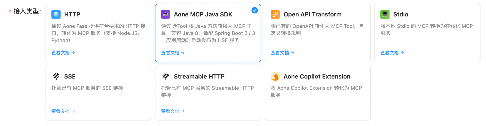

MCP Server 开发概览

接入方式选择
Aone MCP 提供了非常丰富的接入方式，请根据你的技术栈与业务场景，选择合适的开放方式：
- HTTP 接入（通过 Aone FaaS 接入）：
- 新建 Node.js FaaS 应用（或已有 Node.js 应用）：Aone FaaS MCP 研发手册
- 新建 Python FaaS 应用（或已有 Python 应用）：Python Aone MCP 研发手册
- Aone MCP Java SDK 接入：
- Java 应用：Java Aone MCP 研发手册
- 非源码接入：
- 已有 Open API 接入（不限语言，需提供 OAS/Swagger 文档）：OpenAPI 转为 MCP
代理或托管已有 MCP Server
此外，我们也支持代理或托管已有的 MCP Server，请根据已有的 MCP Server 类型选择适合的方案：
- 代理已有 MCP Server
- 在沙箱中运行 command
- 编排工具集 — 基于 Aone 开放市场中已有的工具，组合成新的 MCP Server